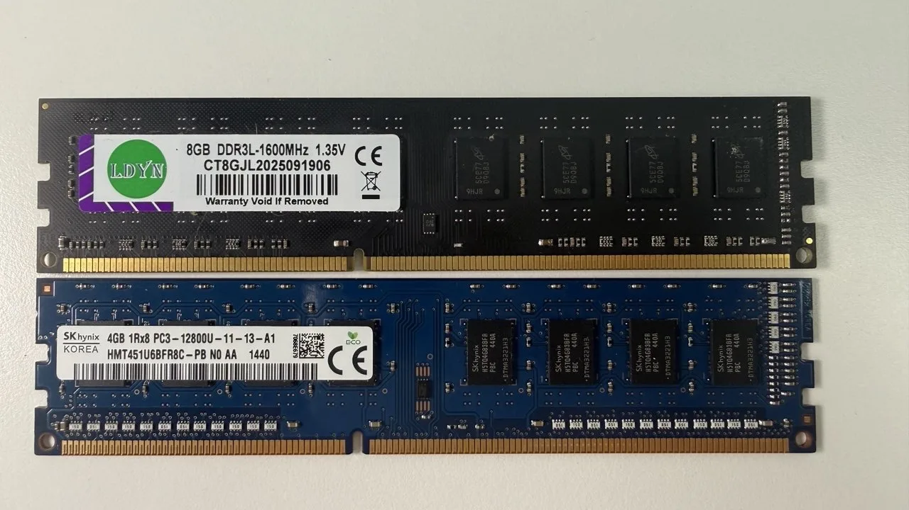

дэнчик
EN
☾
← все заметки
24.09.2026
#железо #mini-pc
Я тут фоном пытаюсь собрать свой ddr3 компьютер. Графика и процессор пока не приехали, но вот память дошла очень быстро. И с ней оказалось все не так просто. Накатал
статейку
о своих мытарствах.

Комментарии
Комментарии